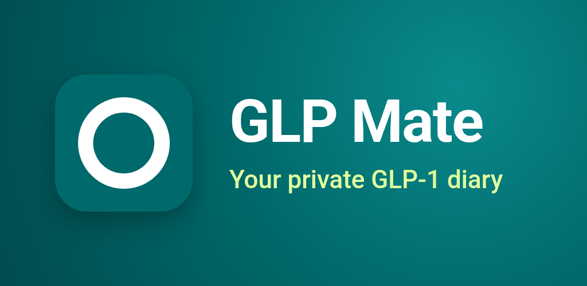
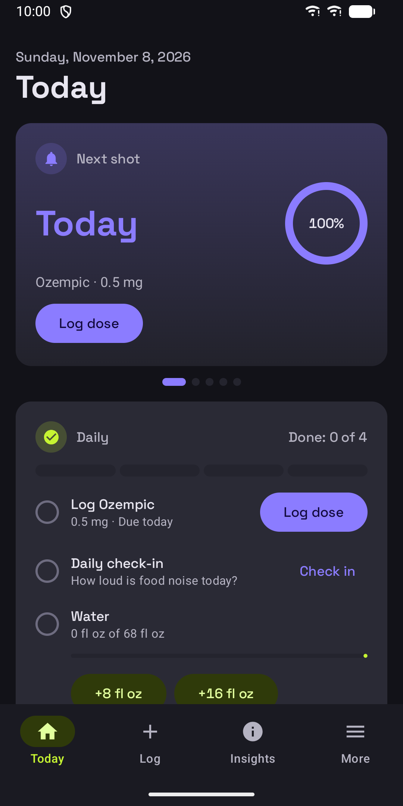
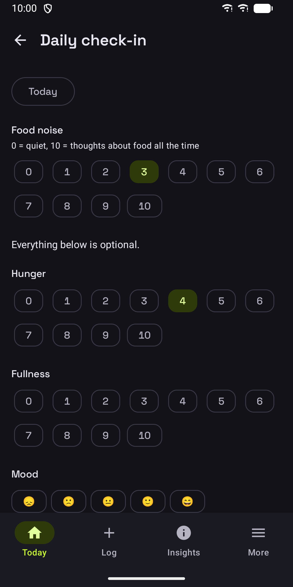
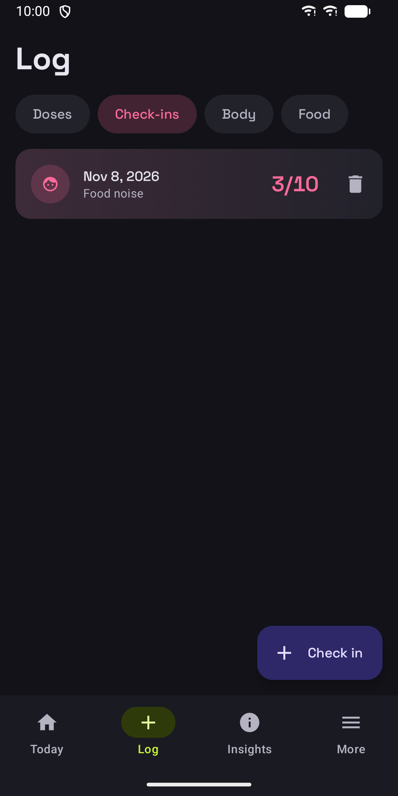
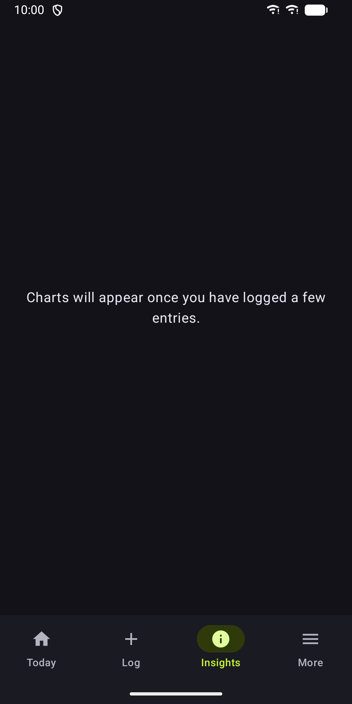
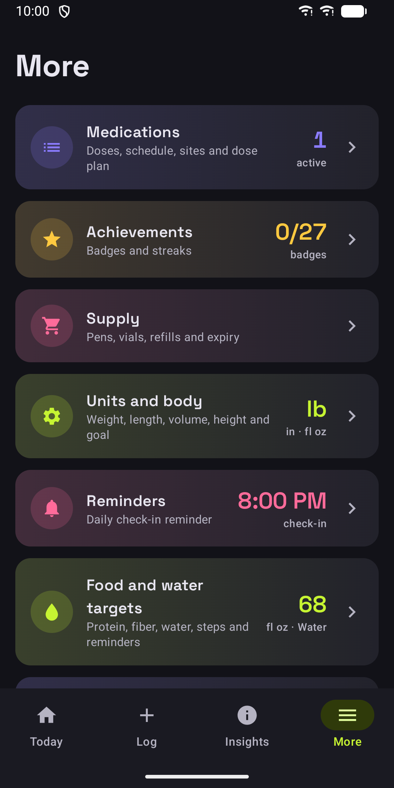

GLP Mate: GLP-1 Shot Tracker
Private diary for GLP-1 shots, side effects, weight, food and supply.






About
GLP Mate is a private diary for people on GLP-1 medication such as semaglutide, tirzepatide or liraglutide, whether you use pens, pills or compounded vials. Everything you enter stays on your phone in an encrypted database. No account, no ads, no tracking. SHOTS AND DOSES Set up one or more medications, each with its own schedule: weekly, daily or every few days, at the time you choose. Log each dose with time, amount in mg, injection site, pain, lot number and a note. The app suggests the next injection site from your own rotation order. A dose plan can be pre-filled from the product label, and you confirm or change it. GLP Mate never recommends a dose. REMINDERS Get a reminder when a shot is due, with buttons to log it or snooze. Optional evening check-in, water and supply reminders. Reminder texts are discreet and never show on the lock screen. DAILY CHECK-IN Rate food noise from 0 to 10, plus hunger, fullness, mood, energy, sleep and bowel movement if you like. Track 13 common side effects or add your own, as mild, moderate or severe. If you log severe vomiting or severe belly pain, the app shows a clear card to contact a doctor. BODY Log weight with a 7-day average, body measurements, BMI and a goal range. FOOD AND WATER Log meals with optional protein, fiber and calories, re-log favourite meals with one tap, and set daily targets for protein, fiber, water and steps. SUPPLY Track each pen, vial or pack. Logged doses are taken off the item in use, and you get one alert when you run low or an item is close to its use-by date. TODAY AND INSIGHTS Today shows your next shot, a daily checklist and what is coming up. Insights shows your weight over up to 3 months with dose changes. Every chart can also be shown as a table. Badges reward consistent logging, never weight lost. HEALTH CONNECT Optionally read weight, body fat, lean mass and steps from Health Connect, and save the weights and water you enter there. FOR YOUR DOCTOR Create a clear PDF report for any date range and share it however you like, or export all entries as CSV. PRIVACY AND BACKUP The database key is protected by the Android Keystore. An optional app lock uses your fingerprint, face or screen lock. Make an encrypted backup file with your own password, back up weekly to a folder you choose, or nightly to a hidden app folder in your own Google Drive, encrypted on your phone first. No analytics, nothing sent to the developer, and one button deletes all data. PREMIUM (OPTIONAL, ONE-TIME PURCHASE) All logging, reminders, backups and the basic doctor report are free. A single in-app purchase, with no subscription, adds: an estimated medication level per compound, food noise and hunger by days since your shot, a side-effect heatmap, weight charts over 6 months and all time, encrypted progress photos with side-by-side compare, and extra report pages. Available in English, German and Spanish, with metric or imperial units. GLP Mate is a personal diary, not a medical device. It does not give medical advice, make diagnoses or recommend doses. Estimates and charts are for information only. Always follow your prescriber and the leaflet that comes with your medication.